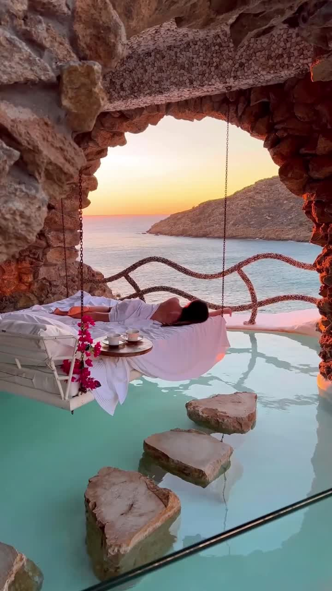
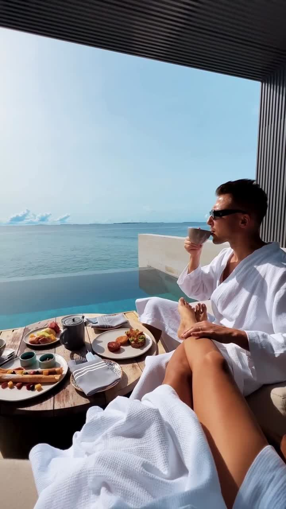

Baixar o vídeo selecionado
- Selecione a página do vídeo que você quer baixar.
- Em “Selecionar páginas”, marque “Esta página”.
- Confira a seleção e toque em “Baixar”.
Obrigado pela sua compra! Veja como acessar o material, personalizar no Canva e baixar seus vídeos.


Você receberá arquivos de texto (.txt) com os links de acesso aos vídeos. Abra esses links no navegador para acessar o conteúdo no Canva.
Ele reúne os endereços de acesso. Os vídeos são visualizados, personalizados e baixados dentro do Canva.
No celular, toque no arquivo e abra com um aplicativo que leia textos ou pela prévia do gerenciador de arquivos.
Toque e segure sobre o endereço e escolha “Copiar”. Selecione desde o início até o último caractere do link.
Abra o Chrome, Safari ou outro navegador. Cole o link na barra de endereços, na parte superior ou inferior da tela, e toque em “Ir”.
Entre na sua conta, se solicitado. Se aparecer a opção de usar o modelo ou criar uma cópia, escolha-a para começar.
Antes de baixar, personalize o conteúdo no Canva com o nome ou logo da agência, uma chamada e as informações do seu pacote.
Confira a página escolhida, os textos e a duração. Quando estiver tudo pronto, abra o menu de download.
No menu de download, confira o formato Vídeo MP4 e escolha uma das três opções abaixo.
“Tudo” se refere ao projeto aberto no Canva. Para baixar o restante do pack, abra também os outros links recebidos.
Se escolher várias páginas e quiser arquivos individuais, confira a opção de arquivos separados antes de baixar.
Copie o endereço inteiro novamente e cole direto na barra de endereços. Verifique se não levou espaços ou partes do texto junto. Se o Canva pedir acesso, confira a conta utilizada e as orientações recebidas com o pedido.
Itens com uma coroa podem exigir um plano pago. Confira o aviso exibido na sua conta. A opção de baixar páginas como arquivos separados também pode depender do plano; baixar uma página por vez é outra forma de organizar os vídeos.
Verifique a pasta Downloads no app Arquivos ou no gerenciador de arquivos. Dependendo do navegador ou do app Canva, o vídeo também pode ser salvo na galeria. Aguarde a conclusão do download antes de fechar a tela.
Use “Personalizado” para baixar menos páginas por vez ou baixe um vídeo de cada vez. Confira o espaço livre no celular e mantenha uma conexão estável durante o download.
Revise os dados da sua oferta, escolha uma legenda e publique o vídeo com a identidade da sua agência.